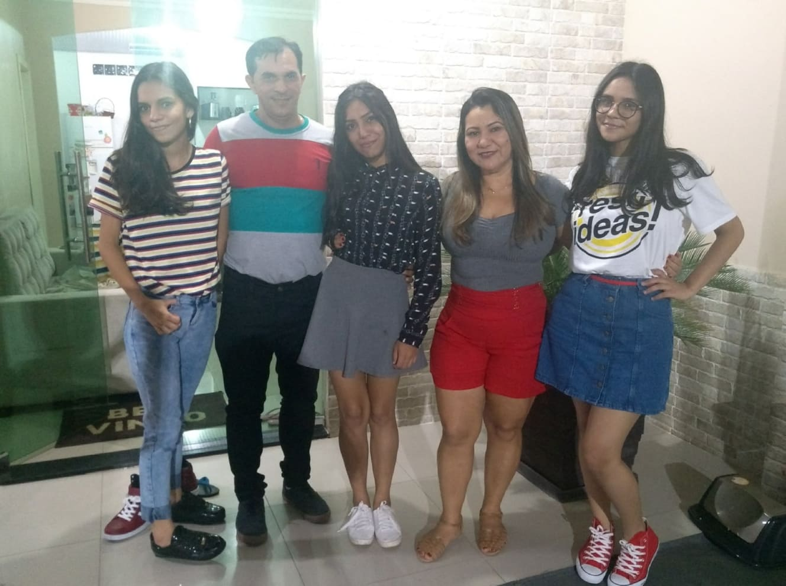
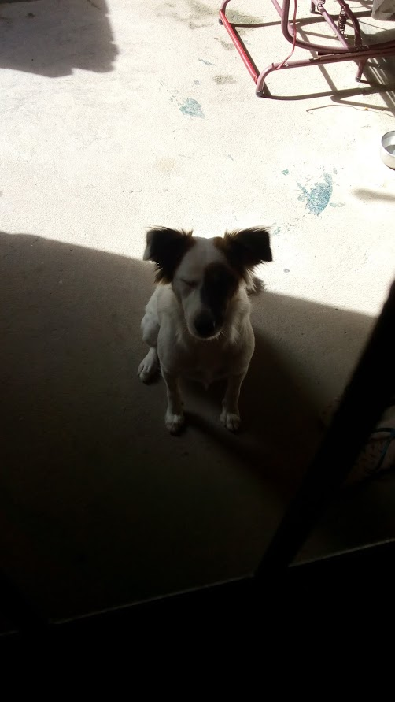
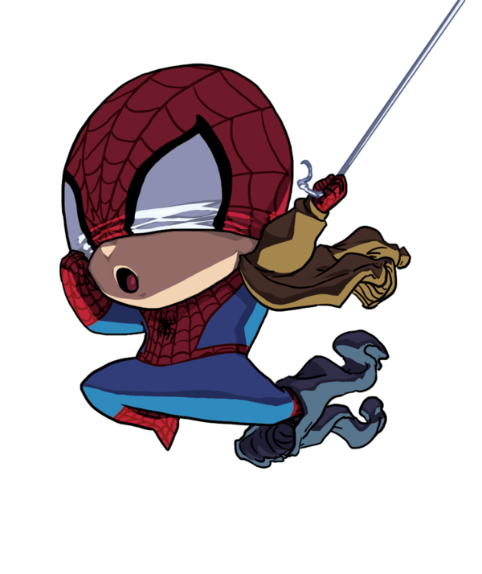

Principais Curiosidades
Maior medo em vida

Fazer com que meus pais não tenham orgulho de mim
Quando eu era pequena, decidi que faria de tudo para os meus pais terem orgulho de
mim no meu futuro, e a aprovação deles é a coisa que eu mais prezo no mundo. Se um dia eu fizer algo que faça com que eles
digam que eu não lhes dei orgulho, eu com certeza falhei em muitos aspectos.
Maior ato de coragem realizado em vida
Qual foi o ato de coragem?
Um dos maiores atos de coragem que eu tive na minha vida foi dizer aos meus pais o
que eu pensava a respeito de sexualidade, política e igreja, sendo que meus pais têm opiniões muito contrárias às minhas em
relação aos tópicos citados.
Quando foi o ato de coragem?
Em 2018
Como foi o ato de coragem?
Estávamos sentados para o café da manhã e eles começaram a falar sobre a eleição
que estava ocorrendo nesse ano, dizendo sobre as "notícias" dos candidatos deles. Abordaram tópicos que eu tinha opiniões
contrárias, e eu nunca havia deixado tão explícito isso, então eu disse tudo o que eu pensava sobre. Eles ficaram bem
contrariados com tudo o que eu disse, pois são muito conservadores. Entretanto, para mim, o mundo está mudando e as
opiniões também. Eu respeito a (opinião) deles e espero que eles respeitem a minha. :))
Quais habilidades utilizou para realizar o ato de coragem? ?
Coragem, principalmente, conhecimentos que eu sabia dos assuntos em pauta,
habilidades de persuasão.
Animais de Estimação

Amo animais de estimação e tenho uma cachorrinha que se chama Ravena (em
homenagem àquela dos Jovens Titãs) e ela é uma mistura de
Border Collie e
Labrador
Retriever.
Heróis

Meus pais são meus maiores heróis. Eles sempre me ajudaram da forma como eles
puderam, me apoiaram e me servem de espelho. Herói pra mim é isso, é alguém que pode servir de espelho para as outras
pessoas, que as ajuda sem segundas intenções. Apesar de ser o papel dos meus pais, eu sou muito grata por eles nunca
terem desistido de mim. Depois deles, talvez o Spider Man seja meu herói preferido, pois aprendeu que o mundo não é fácil
desde cedo, sofreu com a perda do seu tio, cresceu sem os pais, e mesmo assim ele quer fazer a justiça e ajudar quem
precisa.